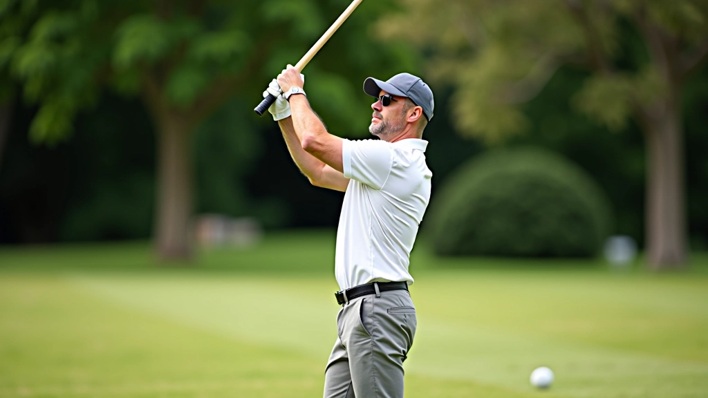
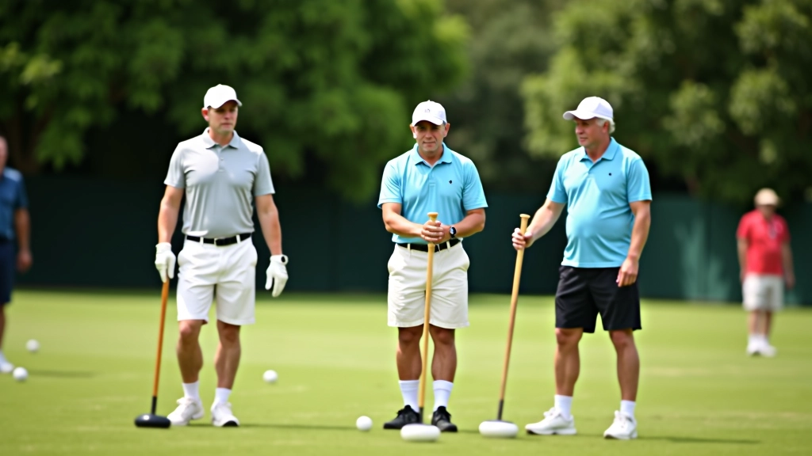
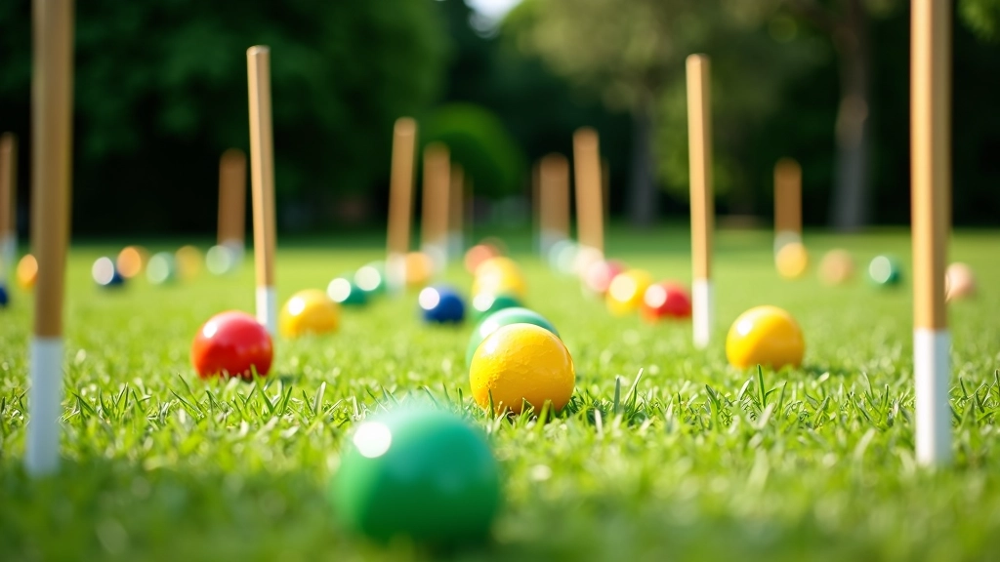
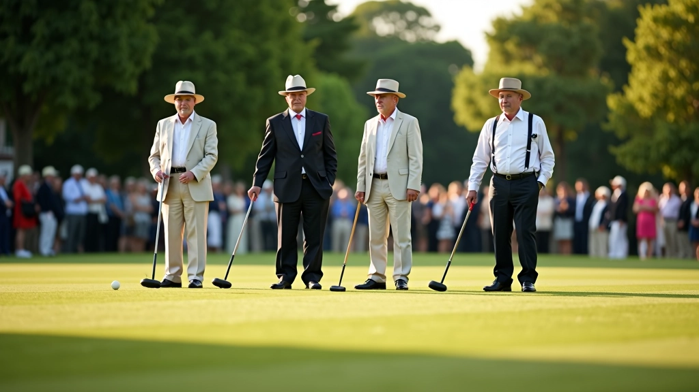

أساسيات ضربة الانقسام للمبتدئين
دليل شامل يغطي الخطوات الأساسية لإتقان ضربة الانقسام وتحسين دقتك في اللعب...
اكتشف كيفية تنفيذ ضربة الروكيه بشكل صحيح وزيادة فرصك في الفوز بالنقاط
ضربة الروكيه تعتبر من أهم الضربات في لعبة الكروكيه، وتُستخدم عندما تكون كرتك ملتصقة بكرة خصمك أو قريبة جداً منها. هذه الضربة تمنحك فرصة للضغط على منافسيك والسيطرة على اللعبة بشكل أفضل.
تختلف ضربة الروكيه عن باقي الضربات بأنها تتطلب دقة عالية وتركيز شديد. يجب أن تتقن هذه الضربة إذا كنت تريد الوصول إلى المستويات المتقدمة من اللعب. نحن سنشرح لك كل ما تحتاج لمعرفته عن هذه الضربة الحاسمة.
لا تقلق إذا بدت هذه الضربة معقدة في البداية. الحقيقة أن معظم اللاعبين يتقنونها بعد بضعة أسابيع من التدريب المكثف. الخطوة الأولى هي فهم الوضعية الصحيحة لجسمك أمام الكرة.
قف بجانب الكرة مع ثني الركبتين قليلاً. رجلاك يجب أن تكون على مسافة عرض الكتفين. هذا يعطيك الاستقرار اللازم لضربة قوية وموجهة.
أمسك العصا بإحكام لكن بدون شد زائد. يجب أن تكون قبضتك مرنة بما يكفي لتوجيه الضربة بدقة. جرب مع كلتا اليدين حتى تجد ما يناسبك.
ارفع العصا برفق وارجعها للخلف حتى تصل إلى ارتفاع الخصر تقريباً. ثم اضرب للأمام بحركة سلسة وقوية. المفتاح هو التسلسل السلس وليس السرعة.

أحد أكثر الأخطاء شيوعاً التي نراها هي عدم انتظار اللاعبين للحظة المناسبة قبل الضربة. يتسرع البعض ويضربون دون تركيز كافٍ. خذ وقتك، خذ نفساً عميقاً، وركز على الهدف. الضربة الواحدة المتقنة أفضل من عشر ضربات متسرعة.

التدريب المنتظم هو السر. ستلاحظ تحسناً حقيقياً بعد أسبوعين من التدريب اليومي لمدة ٣٠ دقيقة. لكن هناك بعض النصائح التي ستسرع من عملية التعلم.
ابدأ بمسافات قصيرة جداً. ضع كرتان على بعد متر واحد فقط واضرب ١٠٠ مرة متتالية. هذا يبني الذاكرة العضلية لديك.
اطلب من صديق أن يصور ضربتك بالهاتف. مشاهدة نفسك تلعب يساعدك على رؤية الأخطاء التي قد لا تلاحظها في اللحظة.
قوة الذراع والأساس مهمة جداً. أضف تمارين بسيطة مثل تمارين الضغط والعقدة لروتينك الأسبوعي.
قبل كل ضربة تخيل النتيجة المطلوبة. هذا يسمى التصور الذهني وهو يحسن الأداء بشكل كبير جداً.
عندما تمسك العصا بقوة زائدة تفقد السيطرة على الضربة. الحل هو أن تمسكها برفق كأنك تمسك بيضة. يجب أن تشعر بالتحكم وليس القوة.
إذا تحرك جسمك أثناء الضربة ستضيع الدقة تماماً. تأكد من أن قدميك ثابتة على الأرض طوال الحركة. بعض اللاعبين المحترفين يضعون وزنهم على الرجل الخلفية قليلاً.
رفع العصا فوق الكتف يؤدي إلى ضربات غير متحكم فيها. ارفعها فقط إلى ارتفاع الخصر أو قليلاً أعلى. هذا يعطيك التحكم الأفضل.
استكمل حركتك بعد اصطدام الكرة. عدم المتابعة يؤدي إلى ضربات ضعيفة وغير موجهة بشكل صحيح. دع الحركة تكتمل بشكل طبيعي.
بعد إتقانك الأساسيات تأتي المرحلة الممتعة حقاً. الآن يمكنك البدء في استخدام ضربة الروكيه بشكل استراتيجي في المباريات الفعلية. هناك عدة مواقف يجب أن تعرف متى تستخدم هذه الضربة بذكاء.
أولاً، استخدم الروكيه عندما تكون في موضع قوي على الملعب. لا تهدر هذه الضربة القوية في مواقف ضعيفة. ثانياً، تعلم كيفية التحكم في قوة الضربة. ضربة قوية جداً قد تجعل كرتك تذهب بعيداً جداً عن الملعب. ثالثاً، استخدم الروكيه لوضع نفسك في موضع أفضل للضربة التالية.

اكتشف مقالات أخرى ذات صلة لتطوير مهاراتك في الكروكيه
دليل شامل يغطي الخطوات الأساسية لإتقان ضربة الانقسام وتحسين دقتك في اللعب...

تعرف على الاستراتيجيات التي يستخدمها اللاعبون المحترفون لتحسين مستواك...

برنامج تدريبي عملي يساعدك على تطوير مهاراتك من خلال تمارين يومية...
هذا المقال يقدم معلومات تعليمية حول تقنيات لعبة الكروكيه. تذكر أن التدريب العملي والممارسة المستمرة هما المفتاح الحقيقي لتحسين مهاراتك. كل لاعب فريد والتعلم يختلف من شخص لآخر. استشر مدربين متخصصين للحصول على توجيهات شخصية تناسب احتياجاتك الخاصة. استمتع باللعبة والتعلم!
ضربة الروكيه ليست صعبة كما قد تبدو في البداية. تذكر المراحل الثلاث الأساسية: الوقفة الصحيحة، القبضة المناسبة، والحركة السلسة. لا تتسرع في التعلم. أفضل لاعبي الكروكيه في العالم قضوا سنوات لإتقان هذه الضربة.
ابدأ بالتدريب اليوم. خذ العصا واذهب إلى الملعب. في غضون أسبوعين ستلاحظ تحسناً حقيقياً. في غضون شهر ستصبح ضربة الروكيه جزءاً طبيعياً من لعبتك. استمتع برحلة التعلم هذه!